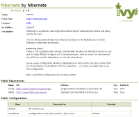
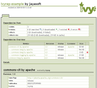

<p>Ivy is a very powerful dependencies manager oriented toward java dependency management, even if it can be used to manage dependencies of any kind.</p> <p>If you don't see why you should use a dependency manager at all, or have any question concerning Ivy in general, have a look at the <a href="faq.html">FAQ</a> and at the [[mailing-lists]].</p> <h1>Integrated with ant</h1> <p>Of course, Ivy is integrated with the most popular build management system for java projects. But the integration goes way beyond common ant integration. Indeed Ivy has been designed with ant integration and design principles in mind. If you have ant skills, you will have ivy skills! The plugin mechanism in ivy follow the same design as ant one, you will find macrodef and files import in ivy configuration, many things with which ant users are already familiar.<br/> And since Ivy is now an Apache project, we are getting even closer to Ant development.</p> <h1>Simple to use</h1> <p>For simple cases, ivy is really simple to use. Declare your dependencies, and that's all. See the <a href="doc/tutorial/start.html">quick start tutorial</a> to check yourself, it should take less than 5 minutes!</p> <p>Ivy can thus be used to bring the dependency management feature of maven to ant build files, for those of you who already use ant and who do not want to setup a maven project. But Ivy does not stop here, and provides much more great features!</p> <h1>Clean dependency reports</h1> <p>Ivy is able to produce mainly two kind of reports: html reports and graph reports. HTML reports gives you a good understanding of what ivy did, and which dependencies your project depends upon. The graph reports let you have a good overview of the transitive dependencies (see below) and conflicts in your project.</p> <p>Here are some samples of what ivy generates for you:<br /> <center><br /> <a href="samples/ivy-sample-xslt.xml"></a> <a href="images/hibgraph.png" alt="ivyfile"><img src="images/hibgraph-small.png" title="full dependency graph"/></a> <a href="samples/jayasoft-ivyrep-example-default.html" alt="graph"></a><br /> </center></p> <h1>Non intrusive</h1> <p>Ivy most common use is to resolve dependencies and copy them in the lib dir of your project. Once copied, your build does not depend on ivy any more. Thus you can easily migrate existing builds using the lib dir pattern to store dependencies. Moreover, you can easily deliver your project with its dependencies so that the build file does not depend on ivy.</p> <h1>Extremely flexible</h1> <p>With Ivy, you usually do not have to adapt your project to ivy structure, it's ivy which can be adapted to your environment.</p> <p>Even if Ivy comes with a lots of default values to work out of the box, you can change many things in ivy. Of course, the dependencies repositories possibilities covers a lot of uses (file system, url based, repository chaining, ...). But that's not all. You can change the way ivy finds latest versions of your dependencies, you can change of conflict manager, you can choose if you want ivy to copy deps in your project libs or to use them directly from ivy cache, ...</p> <h1>Easily extensible</h1> <p>When ivy does not what you want out of the box, you can often extend it to solve your problem. For instance, you can plug your own repository (like scott haug did for a svn repository now available in ivy tools). But you can also defines your own latest strategy and your own conflict manager. See <a href="doc/extend.html">how to extend ivy</a> in the reference doc. </p> <p>Since Ivy 1.4 you can even define very easily your own metadata on your modules, with <a href="doc/concept.html#extra">extra attributes</a>.</p> <h1>High performances</h1> <p>In Ivy, performances have been taken in consideration from the beginning. It uses a cache to avoid downloading twice a dependency, its strong conflict management system has been thought to avoid downloading a dependency if not necessary, all configuration and ivy file parsing are done using SAX for maximum performance, and so on...</p> <h1>Transitive dependencies</h1> <p>Imagine you have a component that you often reuse in your software developments. Imagine that this component has itself dependencies. Then with classical dependencies management, each time you use this component in your software you have to declare it as a dependency, but also all its dependencies.</p> <p>With ivy it's different: you simply write a dependency file once for the component, declaring its own dependencies, then anytime you want to use this component you simply have to declare a dependency on it.</p> <p>And this is even more powerful if the component your software depends on changes of dependencies during its own development. Then, without ivy, you have to maintain all your components dependencies declaration each time the dependencies of this component change. With ivy, you update the ivy file of the component and that's it !</p> <p><i>If you want to quickly start using this feature or simply see it in action with real world examples, check the official repository: <a href="ivyrep.html">ivyrep</a></i></p> <h1>Strong conflict management</h1> <p>The problem with transitive dependencies is that it's sometimes difficult to know exactly which version of a dependency you get, because several modules are depending on it in different versions. Ivy provides a strong and flexible conflict management engine, which let you easily choose which version should be evicted or kept if its default behaviour does not fit your needs. </p> <p>It is also fully integrated with transitive dependencies management, which means that conflicts are solved for each dependency before being solved for your whole module. This ensures that problematics conflicts will only need to solved in the dependency they are encountered.</p> <h1>Out of the box ibiblio repository support</h1> <p>Maven users all know this repository, where you can find a lot of java projects artifacts. With ivy, you benefit from this repository out of the box. But you even benefit from more, since Ivy also uses its <a href="http://ivyrep.jayasoft.org/">own repository</a> for dependencies metadata, leveraging the power of transitive dependencies.</p> <h1>Continuous Integration Ready</h1> <p>Are you working in a continuous integration environment ? No ? You should ;-)</p> <p>If you are working in a continuous integration environment, and if you have many projects that depend one on each other, then you are maybe experiencing the dependency management nightmare... Fortunately, ivy is there to help !</p> <p>With ivy you can declare that a component depends on the latest version of another component. Knowing that, ivy will search for the latest version of the dependency whenever you ask it to do so. This latest version is computed by ivy simply either by checking the date of the dependency versions or by comparing versions as text (either lexicographically or with an algorithm close to the one used in php version_compare function).</p> <h1>Publication handling</h1> <p>Ivy handles for you the publication of your projects to your repository, as defined in ivy. This simplifies a lot the management of multi-project environment.</p> <h1>Pluggable module descriptor parsers</h1> <p>Ivy is able to use ivy files as module descriptors, but also maven2 poms, or even your own module descriptors! This can help you move softly from an existing repository of modules to an ivy managed one.</p> <h1>Unique enterprise features</h1> <p>Ivy is the only dependency management tool to support powerful features such as repository namespace and building through the install task. A <a href="doc/tutorial/build-repository.html">tutorial</a> is dedicated to this feature, and show you how you can build your own repository importing data from public one, and converting heterogeneous repositories into a stable and homogeneous one.</p> <h1>Heavily tested</h1> <p>Ivy benefits from a lot of unit tests checked at each change. It is also under heavy tests by the community itself, and bugs reported by the community are often fixed in only a few days.</p> <h1>Supported by several tools</h1> <p>A growing number of tools support ivy, see the <a href="links.html">links</a> page for details.</p> <h1>Free and open source</h1> <p>Ivy is an incubating Apache project, which means that it's fully open sourced, with a business friendly Apache license.</p> <p>Being open source, you can even modify it for your own needs, and make the community benefit from your enhancements if you like.</p> <h1>Extensively documented</h1> <p>With Ivy, not only the tool is free and open source, but you also have access to a documentation of about 120 pages in its printer friendly version for free!</p>